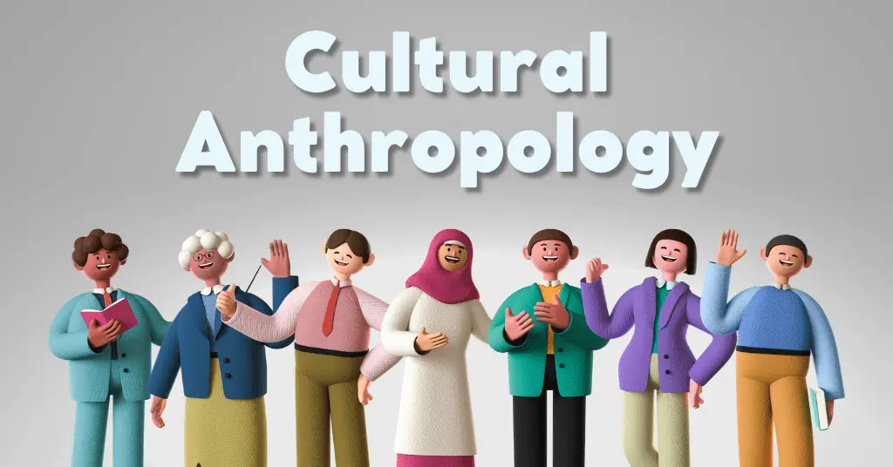

Cultural Anthropology studies human societies, traditions, and cultural practices around the world. Anthropologists examine how people live, communicate, and adapt to social changes.
By studying cultures, we gain a better understanding of human diversity and the ways different societies develop social norms, belief systems, and traditions.
For further learning, check out these resources:
This website provides extensive resources on Cultural Anthropology, including information on kinship systems, rituals, and the importance of fieldwork in anthropology.
SAPIENS is an online magazine that publishes engaging and accessible articles on anthropology. Topics include globalization, cultural change, and the impact of traditions on modern society.
AnthroSource is a database of anthropology journals, offering scholarly articles on topics such as linguistic anthropology, cultural identity, and cross-cultural comparisons.